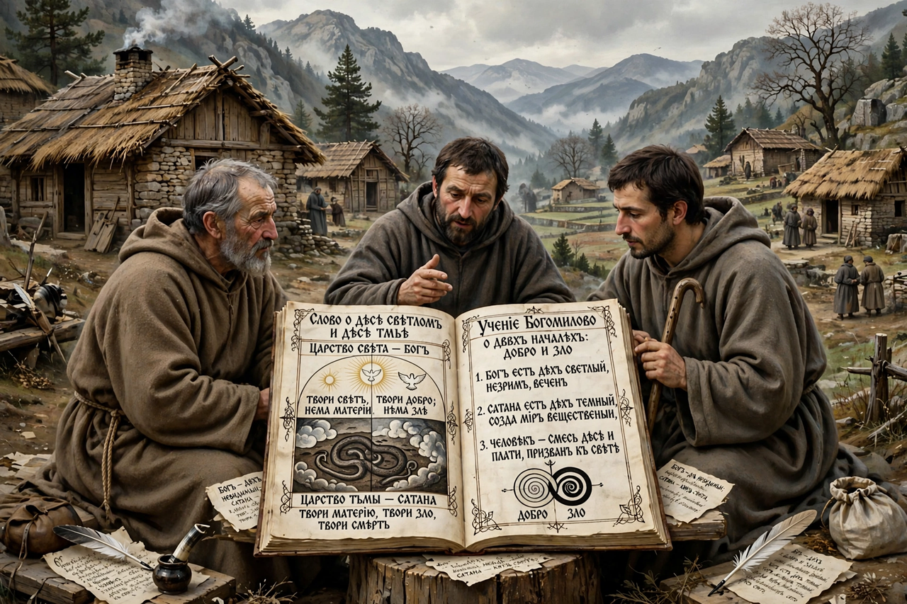

Founder: Priest Bogomil (traditionally)
Region: Bulgaria and the Balkans, 10th–15th centuries
Nature: Dualist Christian heresy
Bogomilism was a dualist Christian movement arising in the First Bulgarian Empire in the 10th century, named after the priest Bogomil. It taught that the material world was created by Satan (Satanael), rejecting church hierarchy, sacraments, icons and much of the Old Testament.
Bogomils lived ascetically, prayed privately with the Lord's Prayer, condemned wealth and war, and spread their teaching through itinerant preachers. Byzantine and Bulgarian authorities persecuted them; the Byzantine Empire under Alexios I burned the Bogomil leader Basil the Physician.
Bogomil ideas travelled west, influencing the Cathars of southern France and northern Italy, and persisted in Bosnia, where a distinct Bosnian Church flourished before the Ottoman conquest. Figures in Serbian history, such as Stefan Nemanja, campaigned against Bogomils in their lands.